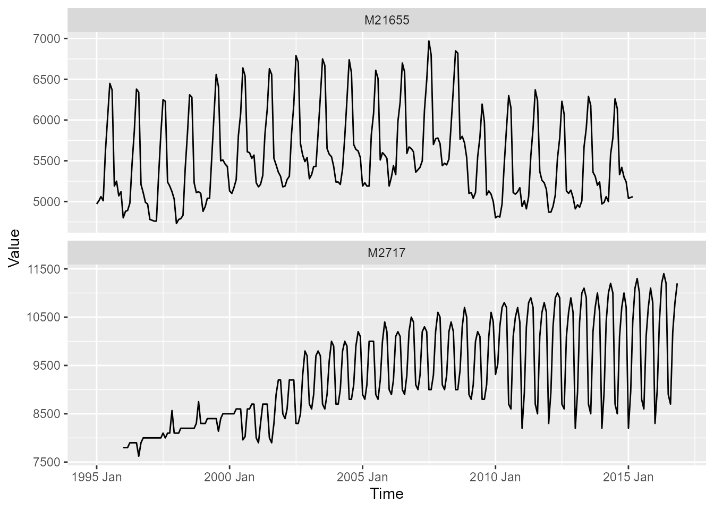
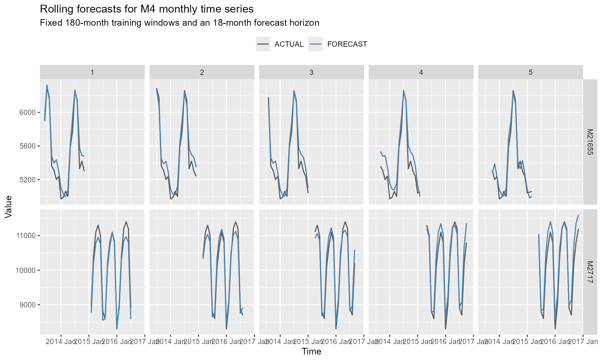

Rolling forecasts
Alexander Häußer
Source:vignettes/vignette_202_tidy_m4_monthly_splits.Rmd
vignette_202_tidy_m4_monthly_splits.RmdIntroduction
This vignette demonstrates how to evaluate Echo State Network
forecasts across multiple rolling windows using the tidy interface of
echos. Rolling forecast evaluation provides a more robust
assessment than a single train-test split because the model is estimated
and evaluated at several forecast origins.
The example uses two monthly time series from
m4_monthly_subset. Fixed training windows are created with
slide_tsibble() from the tsibble package. For
every series and split, an ESN is fitted and used to generate an
18-month-ahead forecast.
Prepare the data
The dataset is filtered to the two time series "M21655"
and "M2717".
selected_series <- c("M21655", "M2717")
data_frame <- m4_monthly_subset %>%
filter(series %in% selected_series)
data_frame
#> # A tsibble: 494 x 4 [1M]
#> # Key: series [2]
#> series category index value
#> <chr> <fct> <mth> <dbl>
#> 1 M21655 Demographic 1995 Jan 4970
#> 2 M21655 Demographic 1995 Feb 5010
#> 3 M21655 Demographic 1995 Mar 5060
#> 4 M21655 Demographic 1995 Apr 5010
#> 5 M21655 Demographic 1995 May 5610
#> 6 M21655 Demographic 1995 Jun 6040
#> 7 M21655 Demographic 1995 Jul 6450
#> 8 M21655 Demographic 1995 Aug 6370
#> 9 M21655 Demographic 1995 Sep 5190
#> 10 M21655 Demographic 1995 Oct 5250
#> # ℹ 484 more rows
p <- ggplot()
p <- p + geom_line(
data = data_frame,
aes(
x = index,
y = value),
linewidth = 0.5
)
p <- p + facet_wrap(
vars(series),
ncol = 1,
scales = "free_y"
)
p <- p + labs(
x = "Time",
y = "Value"
)
p
Define the rolling forecast setup
Each ESN is trained on a fixed window of 180 monthly observations. The forecast horizon is 18 months, corresponding to the horizon used for monthly series in the M4 Forecasting Competition. The forecast origin advances by one month between splits.
Five splits are used in this example. To reduce the vignette runtime,
set n_splits to a smaller value such as 3.
n_train <- 180
n_ahead <- 18
n_step <- 1
n_splits <- 5
n_required <- n_train + n_ahead + (n_splits - 1) * n_stepOnly the most recent observations required for the rolling evaluation are retained. This ensures that both series contribute the same number of observations and splits.
analysis_frame <- data_frame %>%
group_by_key() %>%
slice_tail(n = n_required) %>%
ungroup()
analysis_frame
#> # A tsibble: 404 x 4 [1M]
#> # Key: series [2]
#> series category index value
#> <chr> <fct> <mth> <dbl>
#> 1 M21655 Demographic 1998 Jun 5830
#> 2 M21655 Demographic 1998 Jul 6310
#> 3 M21655 Demographic 1998 Aug 6280
#> 4 M21655 Demographic 1998 Sep 5230
#> 5 M21655 Demographic 1998 Oct 5110
#> 6 M21655 Demographic 1998 Nov 5120
#> 7 M21655 Demographic 1998 Dec 5100
#> 8 M21655 Demographic 1999 Jan 4880
#> 9 M21655 Demographic 1999 Feb 4940
#> 10 M21655 Demographic 1999 Mar 5040
#> # ℹ 394 more rowsCreate rolling training windows
slide_tsibble() creates fixed rolling windows by
observation. The new variable split is added to the tsibble
key and identifies the individual training windows.
train_frame <- analysis_frame %>%
slide_tsibble(
.size = n_train,
.step = n_step,
.id = "split"
) %>%
filter(split <= n_splits)
train_frame
#> # A tsibble: 1,800 x 5 [1M]
#> # Key: split, series [10]
#> series category index value split
#> <chr> <fct> <mth> <dbl> <int>
#> 1 M21655 Demographic 1998 Jun 5830 1
#> 2 M21655 Demographic 1998 Jul 6310 1
#> 3 M21655 Demographic 1998 Aug 6280 1
#> 4 M21655 Demographic 1998 Sep 5230 1
#> 5 M21655 Demographic 1998 Oct 5110 1
#> 6 M21655 Demographic 1998 Nov 5120 1
#> 7 M21655 Demographic 1998 Dec 5100 1
#> 8 M21655 Demographic 1999 Jan 4880 1
#> 9 M21655 Demographic 1999 Feb 4940 1
#> 10 M21655 Demographic 1999 Mar 5040 1
#> # ℹ 1,790 more rowsThe following summary shows the start and end of every training window.
split_frame <- train_frame %>%
as_tibble() %>%
summarise(
train_start = min(index),
train_end = max(index),
n = n(),
.by = c(series, split)
)
split_frame
#> # A tibble: 10 × 5
#> series split train_start train_end n
#> <chr> <int> <mth> <mth> <int>
#> 1 M21655 1 1998 Jun 2013 May 180
#> 2 M2717 1 2000 Feb 2015 Jan 180
#> 3 M21655 2 1998 Jul 2013 Jun 180
#> 4 M2717 2 2000 Mar 2015 Feb 180
#> 5 M21655 3 1998 Aug 2013 Jul 180
#> 6 M2717 3 2000 Apr 2015 Mar 180
#> 7 M21655 4 1998 Sep 2013 Aug 180
#> 8 M2717 4 2000 May 2015 Apr 180
#> 9 M21655 5 1998 Oct 2013 Sep 180
#> 10 M2717 5 2000 Jun 2015 May 180Train the ESN models
The combination of series and split forms
the key of train_frame. Consequently, model()
estimates one ESN for each series and rolling window. With two series
and five splits, ten ESN models are trained.
Because the ESN reservoir is initialized randomly, a seed is set to make the results reproducible.
model_frame <- train_frame %>%
model(
"ESN" = ESN(value)
)
model_frame
#> # A mable: 10 x 3
#> # Key: split, series [10]
#> split series ESN
#> <int> <chr> <model>
#> 1 1 M21655 <ESN({72, 1, 1}, {144, 17.7})>
#> 2 1 M2717 <ESN({72, 1, 1}, {144, 25.29})>
#> 3 2 M21655 <ESN({72, 1, 1}, {144, 16.78})>
#> 4 2 M2717 <ESN({72, 1, 1}, {144, 25.4})>
#> 5 3 M21655 <ESN({72, 1, 1}, {144, 18.05})>
#> 6 3 M2717 <ESN({72, 1, 1}, {144, 25.3})>
#> 7 4 M21655 <ESN({72, 1, 1}, {144, 16.01})>
#> 8 4 M2717 <ESN({72, 1, 1}, {144, 25.25})>
#> 9 5 M21655 <ESN({72, 1, 1}, {144, 25.7})>
#> 10 5 M2717 <ESN({72, 1, 1}, {144, 25.11})>Generate rolling forecasts
An 18-month-ahead forecast is generated for each fitted ESN.
fable_frame <- model_frame %>%
forecast(h = n_ahead)
fable_frame
#> # A fable: 180 x 6 [1M]
#> # Key: split, series, .model [10]
#> split series .model index
#> <int> <chr> <chr> <mth>
#> 1 1 M21655 ESN 2013 Jun
#> 2 1 M21655 ESN 2013 Jul
#> 3 1 M21655 ESN 2013 Aug
#> 4 1 M21655 ESN 2013 Sep
#> 5 1 M21655 ESN 2013 Oct
#> 6 1 M21655 ESN 2013 Nov
#> 7 1 M21655 ESN 2013 Dec
#> 8 1 M21655 ESN 2014 Jan
#> 9 1 M21655 ESN 2014 Feb
#> 10 1 M21655 ESN 2014 Mar
#> # ℹ 170 more rows
#> # ℹ 2 more variables: value <dist>, .mean <dbl>Evaluate forecast accuracy
The forecasts are evaluated against the corresponding observations in
analysis_frame. Accuracy measures are calculated separately
for every series and split.
accuracy_frame <- fable_frame %>%
accuracy(data = analysis_frame)
accuracy_frame
#> # A tibble: 2 × 11
#> .model series .type ME RMSE MAE MPE MAPE MASE RMSSE ACF1
#> <chr> <chr> <chr> <dbl> <dbl> <dbl> <dbl> <dbl> <dbl> <dbl> <dbl>
#> 1 ESN M21655 Test -74.0 116. 94.4 -1.41 1.78 0.667 0.580 -0.0121
#> 2 ESN M2717 Test -59.3 250. 214. -0.660 2.12 1.19 0.911 0.753Visualize the rolling forecasts
For each series and split, the point forecasts are compared with the observed values over the 18-month evaluation period.
forecast_frame <- fable_frame %>%
as_tibble() %>%
transmute(
series,
split,
index,
FORECAST = .mean
)
plot_frame <- forecast_frame %>%
left_join(
analysis_frame %>%
as_tibble() %>%
select(
series,
index,
ACTUAL = value),
by = c(
"series",
"index")) %>%
pivot_longer(
cols = c(ACTUAL, FORECAST),
names_to = "type",
values_to = "value"
)
plot_frame
#> # A tibble: 360 × 5
#> series split index type value
#> <chr> <int> <mth> <chr> <dbl>
#> 1 M21655 1 2013 Jun ACTUAL 5900
#> 2 M21655 1 2013 Jun FORECAST 5962.
#> 3 M21655 1 2013 Jul ACTUAL 6290
#> 4 M21655 1 2013 Jul FORECAST 6327.
#> 5 M21655 1 2013 Aug ACTUAL 6180
#> 6 M21655 1 2013 Aug FORECAST 6150.
#> 7 M21655 1 2013 Sep ACTUAL 5360
#> 8 M21655 1 2013 Sep FORECAST 5480.
#> 9 M21655 1 2013 Oct ACTUAL 5310
#> 10 M21655 1 2013 Oct FORECAST 5397.
#> # ℹ 350 more rows
p <- ggplot()
p <- p + geom_line(
data = plot_frame,
aes(
x = index,
y = value,
color = type),
linewidth = 0.6
)
p <- p + facet_grid(
rows = vars(series),
cols = vars(split),
scales = "free_y"
)
p <- p + scale_color_manual(
values = c(
"ACTUAL" = "grey35",
"FORECAST" = "steelblue"
)
)
p <- p + labs(
title = "Rolling forecasts for M4 monthly time series",
subtitle = "Fixed 180-month training windows and an 18-month forecast horizon",
x = "Time",
y = "Value",
color = NULL
)
p <- p + theme(legend.position = "top")
p
Summary
This example combines the tidy interface of echos with
rolling-window functionality from tsibble. The workflow
consists of four main steps:
- Create multiple fixed training windows with
slide_tsibble(). - Estimate one ESN for each series and split with
model(). - Generate forecasts with
forecast(). - Evaluate the forecasts across splits with
accuracy().
The same workflow can be extended to more series, additional forecast
origins, or alternative models supported by the fable
framework.